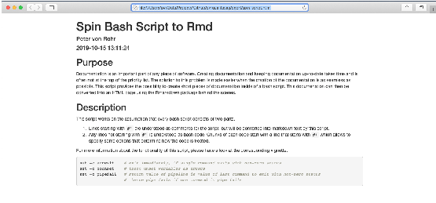

library(qgert)
The function spin_sh() is the analoguous function to knitr::spin() but for bash scripts. That means the function spin_sh() takes a specially formatted bash script and converts it into a literate programming document. Normal text that contains the documentation of the bash script should be written after the roxygen comment (#') and code chunks should start with a code chunk option line which is written after #+.
The function spin_sh() separates the text from the code chunks and converts the bash script into a Rmarkdown (Rmd) document. When specified by the function parameter pb_knit, the Rmd is rendered into a static HTML page. In contrast to knitr::spin(), the bash code chunks must start with a chunk option line that starts with #+, otherwise code chunks are not recognized correctly. By default, the option eval=FALSE is set for every chunk, except the option is explicitly assigned with a given value.
The only argument that must be specified for spin_sh() is the name of a bash script that contains the special formatting described in the previous section.
spin_sh(ps_sh_hair = system.file('bash', 'spin_script.sh', package = 'qgert'))
The above function call takes the bash-script spin_script.sh converts it into a Rmarkdown file with the name spin_script.Rmd and then renders the Rmd source to a static HTML page stored in spin_script.html. The name of the output file can be specified with the argument ps_out_rmd. Options pb_knit and ps_out_rmd determine whether the Rmd source should be rendered to an HTML page and whether the Rmd source file should be kept or not.
The result of calling spin_sh() as shown above is a static HTML page which shows documentation and code chunks together formatted in a way that users of the rmarkdown and the knitr packages are familiar with. A screenshot of the output file is shown below.

The original function knitr::spin() has many options and features which are not ported to spin_sh(). As an example, spin_sh() provides only two output format options (html and pdf) which can be determined with the additional parameter pobj_output_format which is directly passed to rmarkdown::render(). The functionality of spin_sh() can also be used from the bash script called spin_script.sh which is used in the test output above. The options required by spin_sh() are taken from commandline options where
-s <input_file> specifies the bash input file-o <output_file> specifies the name of the output file-f <output_format> specifies the output format.Only the first options must be specified.
sessioninfo::session_info() #> ─ Session info ─────────────────────────────────────────────────────────────── #> setting value #> version R version 4.0.2 (2020-06-22) #> os macOS Catalina 10.15.4 #> system x86_64, darwin17.0 #> ui X11 #> language (EN) #> collate en_US.UTF-8 #> ctype en_US.UTF-8 #> tz Europe/Zurich #> date 2020-09-24 #> #> ─ Packages ─────────────────────────────────────────────────────────────────── #> package * version date lib source #> assertthat 0.2.1 2019-03-21 [2] CRAN (R 4.0.0) #> backports 1.1.6 2020-04-05 [2] CRAN (R 4.0.0) #> cli 2.0.2 2020-02-28 [2] CRAN (R 4.0.0) #> crayon 1.3.4 2017-09-16 [2] CRAN (R 4.0.0) #> desc 1.2.0 2018-05-01 [2] CRAN (R 4.0.0) #> digest 0.6.25 2020-02-23 [2] CRAN (R 4.0.0) #> evaluate 0.14 2019-05-28 [2] CRAN (R 4.0.0) #> fansi 0.4.1 2020-01-08 [2] CRAN (R 4.0.0) #> fs 1.4.1 2020-04-04 [2] CRAN (R 4.0.0) #> glue 1.4.0 2020-04-03 [2] CRAN (R 4.0.0) #> htmltools 0.4.0 2019-10-04 [2] CRAN (R 4.0.0) #> knitr 1.28 2020-02-06 [2] CRAN (R 4.0.0) #> magrittr 1.5 2014-11-22 [2] CRAN (R 4.0.0) #> MASS 7.3-51.6 2020-04-26 [2] CRAN (R 4.0.2) #> memoise 1.1.0 2017-04-21 [2] CRAN (R 4.0.0) #> pkgdown 1.5.1 2020-04-09 [2] CRAN (R 4.0.0) #> qgert * 0.2.12 2020-09-24 [1] local #> R6 2.4.1 2019-11-12 [2] CRAN (R 4.0.0) #> Rcpp 1.0.4.6 2020-04-09 [2] CRAN (R 4.0.0) #> rlang 0.4.6 2020-05-02 [2] CRAN (R 4.0.0) #> rmarkdown 2.1 2020-01-20 [2] CRAN (R 4.0.0) #> rprojroot 1.3-2 2018-01-03 [2] CRAN (R 4.0.0) #> rstudioapi 0.11 2020-02-07 [2] CRAN (R 4.0.0) #> sessioninfo 1.1.1 2018-11-05 [2] CRAN (R 4.0.0) #> stringi 1.4.6 2020-02-17 [2] CRAN (R 4.0.0) #> stringr 1.4.0 2019-02-10 [2] CRAN (R 4.0.0) #> withr 2.2.0 2020-04-20 [2] CRAN (R 4.0.0) #> xfun 0.13 2020-04-13 [2] CRAN (R 4.0.0) #> yaml 2.2.1 2020-02-01 [2] CRAN (R 4.0.0) #> #> [1] /private/var/folders/2v/jfsqj8zj2f122jcgy15nzfn00000gn/T/Rtmpnz1EXS/temp_libpath1adf6421b432 #> [2] /Library/Frameworks/R.framework/Versions/4.0/Resources/library